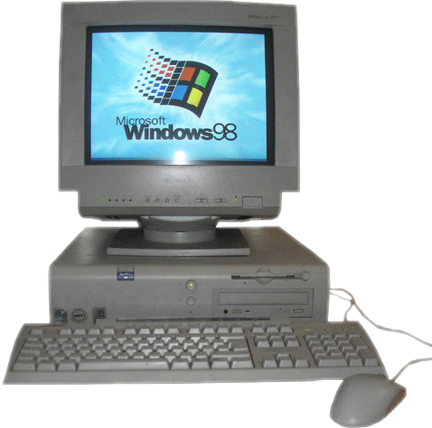

Hi, I am Kaius. I enjoy listening to 70s/80s rock, jazz/lounge and classical music. I like collecting 8-track catridges, cassette tapes, records and CDs. I also enjoy playing around with old computers and operating systems such as Windows 98, and use Debian 10, which is a Linux distribution, as my main operating system. I have experience with HTML, batch scripting (.bat files), a bit of CSS, and a very little of C. In my free time I also enjoy going on bike rides down to the beach.

I decided to take Computer Studies 10, because I am thinking about taking electrical engineering in university and I want to know some computer programming. So far in this course, I have learnt how to use Gamemaker which is a visual game designing enivronment and some basic HTML. Next yesr, I am planning on taking Programming 11, because I am interested in learning Python, which has many useful applications.
One of my favourite websites in Wikipedia.org because it has information on basicly everything!